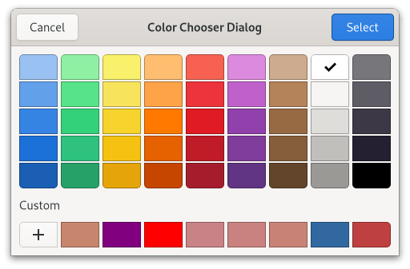

Gtk.ColorChooserDialog¶
Example¶

- Subclasses:
None
Methods¶
- Inherited:
Gtk.Dialog (11), Gtk.Window (64), Gtk.Widget (183), GObject.Object (37), Gtk.Accessible (17), Gtk.Buildable (1), Gtk.Native (6), Gtk.Root (3), Gtk.ColorChooser (5)
- Structs:
class |
|
Virtual Methods¶
Properties¶
- Inherited:
Gtk.Dialog (1), Gtk.Window (26), Gtk.Widget (35), Gtk.Accessible (1), Gtk.ColorChooser (2)
Name |
Type |
Flags |
Short Description |
|---|---|---|---|
r/w |
Signals¶
Fields¶
Class Details¶
- class Gtk.ColorChooserDialog(*args, **kwargs)¶
- Bases:
- Abstract:
No
A dialog for choosing a color.
<picture> <source srcset=”colorchooser-dark.png” media=”(prefers-color-scheme: dark)”> <img alt=”An example
Gtk.ColorChooserDialog" src=”colorchooser.png”> </picture>GtkColorChooserDialogimplements the [iface`Gtk`.ColorChooser] interface and does not provide much API of its own.To create a
GtkColorChooserDialog, use [ctor`Gtk`.ColorChooserDialog.new].To change the initially selected color, use [method`Gtk`.ColorChooser.set_rgba]. To get the selected color use [method`Gtk`.ColorChooser.get_rgba].
GtkColorChooserDialoghas been deprecated in favor of [class`Gtk`.ColorDialog].- CSS nodes
GtkColorChooserDialoghas a single CSS node with the namewindowand style class.colorchooser.Deprecated since version 4.10: Use [class`Gtk`.ColorDialog] instead
- classmethod new(title, parent)[source]¶
- Parameters:
parent (
Gtk.WindoworNone) – Transient parent of the dialog
- Returns:
a new
GtkColorChooserDialog- Return type:
Creates a new
GtkColorChooserDialog.Deprecated since version 4.10: Use [class`Gtk`.ColorDialog] instead